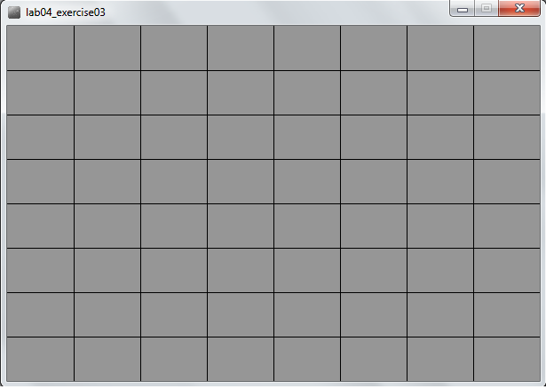
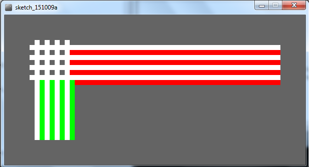

Objectives
On completion of this lab you should:
- understand variable scope and be able to code static drawings using for loops.
Variable scope (local and global)
- In this step, we will implement the code examples 6.1 - 6.3 from your lectures.
Understanding variable scope
Create a new Processing sketch in your workspace and call it lab06_variable_scope.
Enter the following code into your sketchbook (don't copy and paste...write the code out):
void setup()
{
size(500,400);
background(0);
stroke(255);
fill(45,45,45);
}
void draw() {
int diameter = 100;
if (mousePressed)
{
diameter = diameter – 10;
background(0);
}
ellipse(mouseX, mouseY, diameter, diameter);
}Run your code. Is your circle reducing in size? Do you see the problem?
- The diameter variable is declared in the draw() function i.e. it is a local variable.
- It is only “alive” while the draw() function is running.
- Each time the draw() function:
- finishes running, the diameter variable is destroyed.
- is called, the diameter variable is re-created.
- To fix this, change your code so that it looks like this:
int diameter = 100;
void setup()
{
size(500,400);
background(0);
stroke(255);
fill(45,45,45);
}
void draw()
{
if (mousePressed)
{
diameter = diameter - 10;
background(0);
}
ellipse(mouseX, mouseY, diameter, diameter);
}Run your code. Does it work as you would expect?
There is a problem with the code. In the ellipse method, the width and height are absolute values (the negative sign is dropped).
To handle this logic bug, we need to stop reducing the diameter by 10 when we reach a certain value, say 20.
Implement this code and test your code again:
int diameter = 100;
void setup()
{
size(500,400);
background(0);
stroke(255);
fill(45,45,45);
}
void draw()
{
if ((mousePressed) && (diameter > 20))
{
diameter = diameter - 10;
background(0);
}
ellipse(mouseX, mouseY, diameter, diameter);
}Did you notice that it seems the reduction is larger than 10 when we press the mouse?
Why? The default frame rate is 60 refreshes of the screen per second i.e. draw() is called 60 times per second.
You can change the frame rate by calling the frameRate() function.
Now try this solution:
int diameter = 100;
void setup() {
size(500,400);
background(0);
stroke(255);
fill(45,45,45);
frameRate(20);
}
void draw() {
if ((mousePressed) && (diameter > 20)){
diameter = diameter - 10;
background(0);
}
ellipse(mouseX, mouseY, diameter, diameter);
}For Loops
- In this step, we will implement the for loop examples from your lectures.
For Loop
Create a new Processing sketch in your workspace and call it lab06_for_loops.
Enter the following code into your sketchbook (don't copy and paste...write the code out):
int yCoordinate = 60;
size(600, 300);
background(102);
fill(255);
noStroke();
for(int i = 0; i < 4; i++)
{
rect(50, yCoordinate, 500, 10);
yCoordinate = yCoordinate + 20;
}Run your code. This code should draw four white horizontal blocks.
Does it work as you would expect?
Same loop, but without the yCoordinate variable
Update the above code by removing the yCoordinate variable and updating the for loop accordingly (the solution is in your lectures, but try to do this without looking at the slides).
Does it work the same?
Nested For Loops
In this step, we will implement the nested for loop example from your lectures.
Create a new Processing sketch in your workspace and call it lab06_nested_for_loops.
Enter the following code into your sketchbook (don't copy and paste...write the code out):
for (int i=0; i < 4; i++)
for (int j=0; j < 4; j++)
println("The value of i is: " + i + " and j is: " + j);Run your code. This code should print out a series of lines to your console.
Look at these lines, in particular, look at the values printed for i and for j. Do you understand the mechanics of how the nested for loop works?
Exercises
For each exercise listed below, open a new sketchbook.
You may need to visit the Processing website for additional information.
Exercise 1 (static drawing)
Create a display window of 400x400 with a gray background.
In the setup() method, use a for loop to draw a chessboard (for this exercise, use the line() method).
A chess board is an 8x8 grid and should look like the screen shot below:

Exercise 2 (static drawing)
- Create a new sketch and re-write the Exercise 1 code so that the chess board is drawn correctly regardless of the width and height of the display window.

Console Exercise 1
- Create a new sketch and use a for loop and the println method to print hello 5 times to the console.
Console Exercise 2
- Create a new sketch and use a for loop and the println method to print the numbers 1 to 10 to the console.
Console Exercise 3
- Create a new sketch and use a for loop and the println method to print 10, 9, 8, 7, 6, 5, 4, 3, 2, 1, blast off to the console.
Console Exercise 4
- Create a new sketch and use a for loop and the println method to print all the even numbers between 2 and 10 to the console.
Challenge Exercise 1 (static drawing)
- Create a new sketch.
- Use two separate for loops to draw this image:

- Note: One for loop should be used to draw the horizontal portion of the image, and one for loop should be used to draw the vertical portion.
Challenge Exercise 2 (static drawing)
- Create a new sketch and draw your chessboard on a 400x400 window using the rect() method instead of the line() method. You will need a nested for loop to do this.
Solutions
The solutions for this lab can be found here.
The file is in Zip format, so when you download it, you will need to unzip it. If you don't have unzipping software installed on your computer, 7Zip is a good choice.